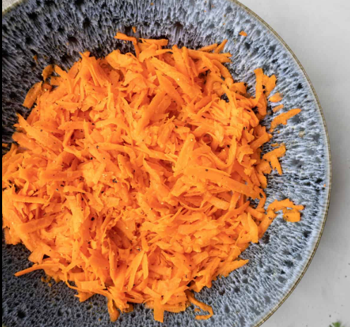

Gajjar ka halwa (carrot puding)
Explore the vibrant and diverse world of Indian cuisine through our website, where you'll discover a rich tapestry of flavors and culinary delights. Menu 1 invites you to embark on a tantalizing journey through an array of aromatic curries, each bursting with spices and textures that will transport you to the heart of India. Meanwhile, Menu 2 offers a delectable selection of my personal favorite desserts, ranging from traditional treats to innovative delights that are sure to satisfy your sweet cravings. Join us as we celebrate the essence of Indian cooking and indulge in a feast for the senses like no other.
MENU 2

Gajjar ka halwa, also known as carrot halwa, is a popular Indian dessert made with carrots, milk, sugar, and ghee (clarified butter). Here's a basic recipe for making gajjar ka halwa: Ingredients: 500 grams carrots (about 4-5 medium-sized carrots), grated 500 ml full-fat milk 1/2 cup sugar (adjust according to taste) 4 tablespoons ghee (clarified butter) 1/4 cup chopped nuts (almonds, cashews, pistachios), optional 1/4 teaspoon cardamom powder Saffron strands (optional, for garnish)
Instructions: Wash, peel, and grate the carrots using a grater or food processor. Set aside. In a heavy-bottomed pan or kadhai, heat 2 tablespoons of ghee over medium heat. Add the grated carrots to the pan and sauté them in the ghee for about 5-7 minutes, stirring frequently. Once the carrots have softened slightly and released their aroma, add the milk to the pan. Cook the carrots in the milk over medium-low heat, stirring occasionally, until the milk reduces and thickens, and the carrots are cooked through. This process may take about 30-40 minutes. Once the carrots are cooked and the milk has reduced significantly, add sugar to the pan. Stir well to combine. Continue to cook the halwa, stirring frequently, until the sugar is fully dissolved and the mixture thickens further. In a separate small pan, heat the remaining 2 tablespoons of ghee. Add the chopped nuts to the hot ghee and fry them until they turn golden brown. This step is optional but adds a nice crunch and flavor to the halwa. Once the halwa reaches a thick consistency and the carrots are cooked completely, add the cardamom powder and fried nuts to the pan. Stir well to incorporate. Cook the halwa for another 5-10 minutes, stirring continuously, until it reaches a pudding-like consistency and starts leaving the sides of the pan. Once the halwa is cooked to your desired consistency, remove it from the heat. Serve the gajjar ka halwa hot, garnished with saffron strands if desired. Enjoy!